F I Ş A Nr. 5
Crearea rapoartelor.
Un raport este o interogare dintr-o bază de date ce urmează a fi interpretată de o anumită persoană. Acea persoană doreşte să vizualizeze respectivele date într-un mod cât mai plăcut astfel încât să poată cât mai uşor să extragă o informaţie relevantă.
La rapoarte contează foarte mult două aspecte:
- Partea estetică (layout): culori, borduri, tabele;
- Forma în care sunt prezentate datele: antet, subsol, formatare condiţionată.
Creaţi tabelul "ANGAJATI" care să conţină următoarele câmpuri:
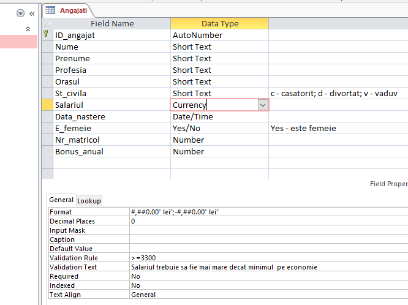
Inseraţi următoarele inregistrări:
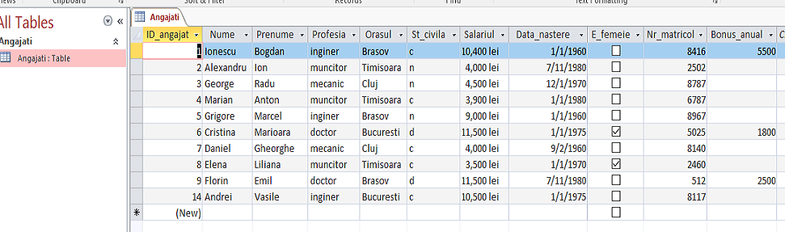
1. Crearea unui raport utilizând instrumentul Raport.
Instrumentul Raport oferă cea mai rapidă modalitate de a crea un raport, deoarece generează imediat un raport fără a vă cere informații. Raportul afișează toate câmpurile din tabelul sau interogarea selectată.
- În Panoul de navigare, faceți clic pe tabelul sau interogarea pe care doriți să se bazeze raportul:
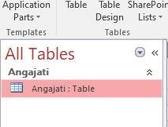
- Pe fila Creare(Create), în grupul Rapoarte(Reports), faceți clic pe Raport(Report):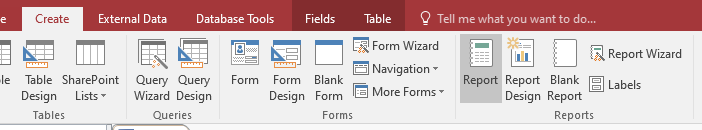
- Access creează raportul și îl afișează în vizualizarea Aspect(Design):
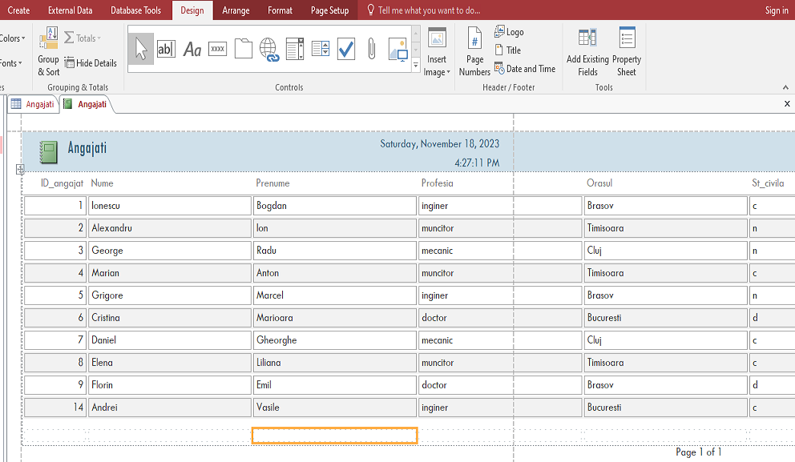
Lățimea câmpurilor se poate micșora cu mouse-ul folosind dreptunghiul din partea de jos:
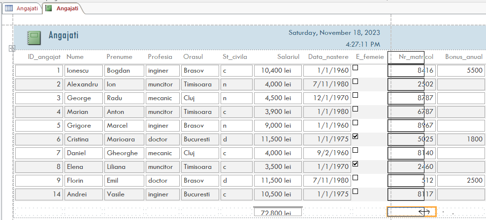
După vizualizarea raportului, salvați și închideți apoi raportul:
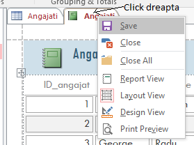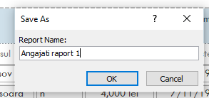
2. Crearea unui raport utilizând Expertul raport(Report Wizard).
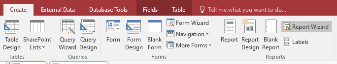
-
Vrăjitorul (Wizard) ne întreabă ce stă la baza raportului nostru. Putem alege dintre tabelele şi interogările deja create. Alegem tabelul ANGAJATI. Acum putem să selectăm coloanele de care avem nevoie în raport. Alegem : Nume, Prenume, Profesia, Orasul. Apăsăm butonul Next.
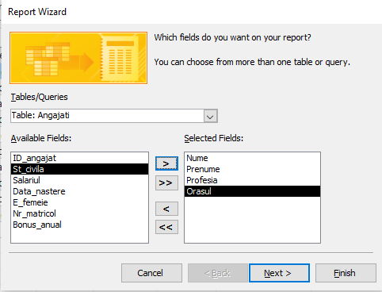
-
Putem să grupăm datele într-un anumit fel, dar nu avem nevoie aşa că apăsăm butonul Next.
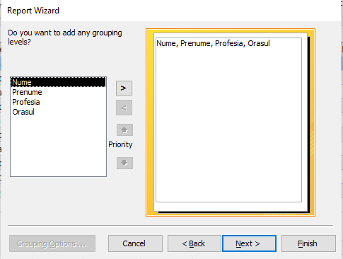
-
Putem de asemenea să menţionăm modul de sortare. Vom alege să sortăm după Nume, crescător(Ascending). Apăsăm butonul Next.
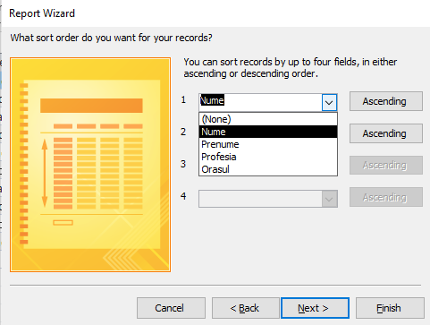
-
Putem să alegem layout-ul raportului. Vom bifa Tabular (unul dintre cele mai comune) împreună cu orientarea paginii Portrait. Apăsăm butonul Next.
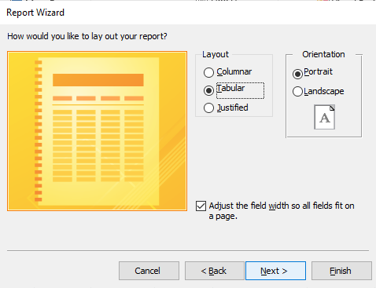
-
În final dăm un nume raportului: Raport Angajati raport 2.
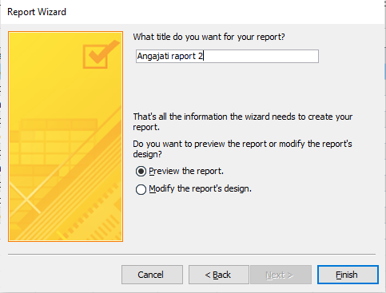
-
Apăsăm Finish şi obţinem:
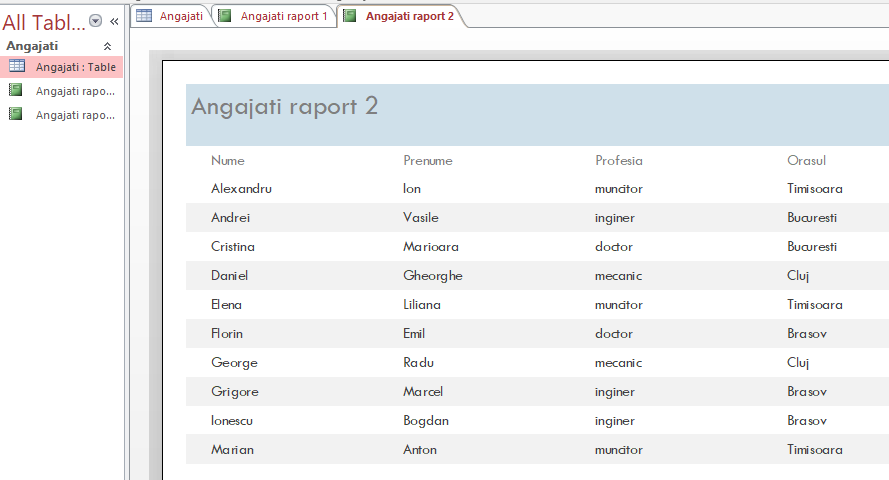